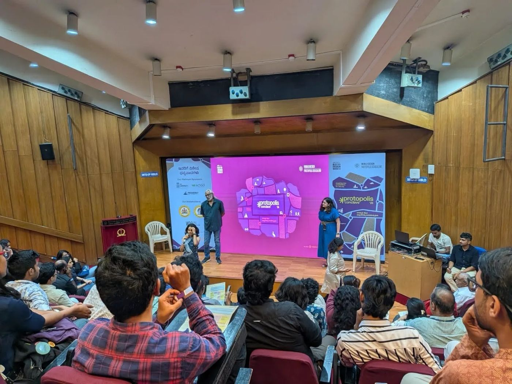
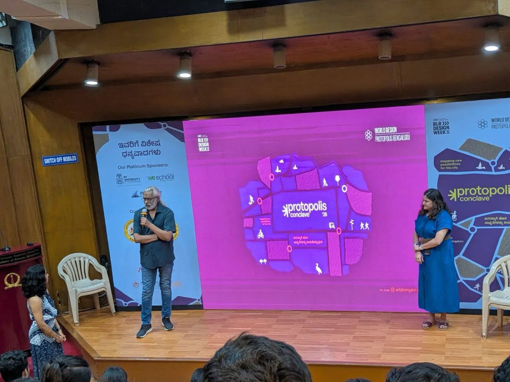

Youth Voices in Action: our film at Bengaluru Design Week
Our short film, Heat Through the Eyes of Young People, was selected for the Bengaluru Design Week Film Festival. It was screened on 24 September at J.N. Tata Auditorium, Indian Institute of Science (IISc), Bengaluru, followed by a panel discussion.
The film explores how rising temperatures are changing the everyday lives of young people across Karnataka, from very different backgrounds and settings. It follows our own questions and the realities we found, asking what young people have to say and what we can do today to build a heat-resilient Karnataka.
Developed by Swasti in partnership with Restless Development